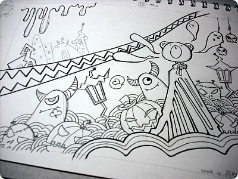
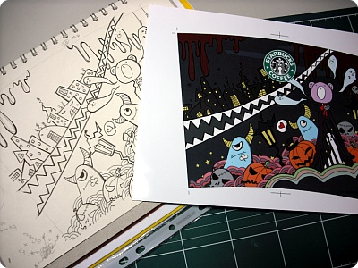
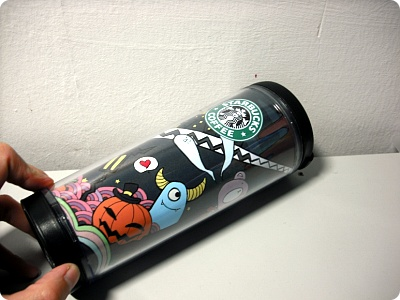
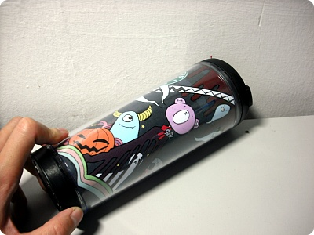
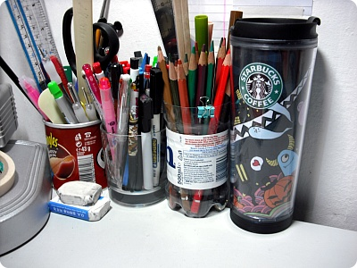
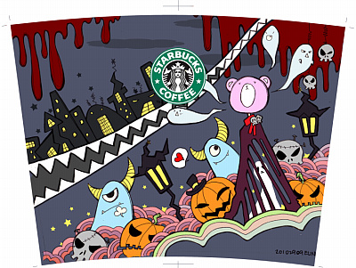
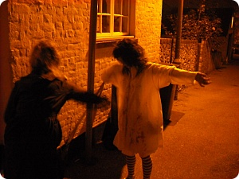
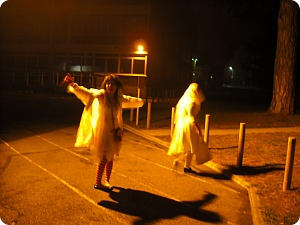

할로윈 기념
나름 할로윈 리미티드 에디숑~






Design your own TUMBLER ^^***
오늘(29일) 학교 바에서 할로윈 파티가 있었는데
코스튬 주제는 '록키호러픽쳐쇼' ㅋㅋㅋㅋ
애들 코스튬 구경하고 사진찍을 생각으로 댕겨왔는데
어윽 학교이벤트 넘 인기없어 ㅋㅋㅋㅋ
코스튬보다는 전부 얼굴에 피칠갑을 한 애들뿐이었음;;;
오늘(29일) 학교 바에서 할로윈 파티가 있었는데
코스튬 주제는 '록키호러픽쳐쇼' ㅋㅋㅋㅋ
애들 코스튬 구경하고 사진찍을 생각으로 댕겨왔는데
어윽 학교이벤트 넘 인기없어 ㅋㅋㅋㅋ
코스튬보다는 전부 얼굴에 피칠갑을 한 애들뿐이었음;;;

열심히 피칠(....;;)을 당하고있는 토모코

같이간 이 두 츠자 코스튬이 젤 귀여웠다
(코스튬 테마랑은 별 상관없어보이지만^^;;;)
31일날 저녁 길바닥 광경이 심히 걱정된다;; 궁금하기도하고 ㅋㅋㅋ
(코스튬 테마랑은 별 상관없어보이지만^^;;;)
31일날 저녁 길바닥 광경이 심히 걱정된다;; 궁금하기도하고 ㅋㅋㅋ